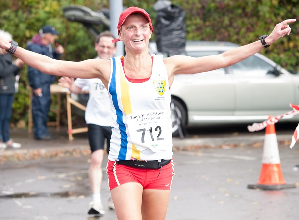
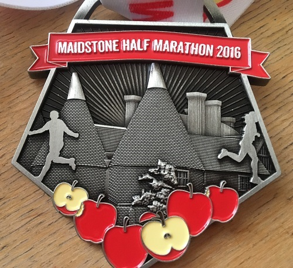
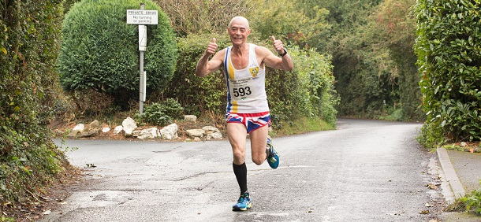

Lionel and myself braved the brand new Maidstone half marathon course today, writes Grace Manzotti. Being a new course we really didn't know what to expect. Well for a start it wasn't a half marathon, it was a half marathon plus a 0.60 miles, one whole KM! This has never happened to me in a race before! So we had to do 13.7 miles, 22 km instead of 13.1.
They got us to turn at the wrong place near mile 4 so from mile 3 onwards all the miles markers were wrong, which threw me. I was not very impressed when I got 13.1 on my watch and I saw a massive hill ahead of me and the finish line nowhere in sight. About the hills… they called it challenging and undulating, well more like killer half with crazy hills I would say. The hills were both long and steep.

Myself and Lionel are proud to report we never walked we ran up them all and overtook quite a few people. There were downhills too of course, what goes up comes down, and I tried to fly down, but after seeing couple of people falling over as it was so wet, I was cautious.

There were lots of positives too, the course is really scenic, beautiful views of the countryside and goes through nice villages too, the weather was very kind to us and as the race started it stopped raining, race headquarters were inside and well organised and lots of marshals around the course and the medal is fabulous as you can see from the photo. I am going to try this race next year again with the right distance! I think it is a good one to do to train on hills but not a fast course.
The SAC results were:
| Pos | Time | Net Time | Name | Club | Race No | Category | Categ Pos | Gender | Gender Pos |
|---|---|---|---|---|---|---|---|---|---|
| 154 | 02:04:08 | 02:03:32 | Grazia Manzotti | Sevenoaks AC | 712 | FV 45 | 6 | Female | 24 |
| 207 | 02:11:05 | 02:10:28 | Lionel Stielow | Sevenoaks AC | 593 | MV 60 | 5 | Male | 165 |
The results are here.
